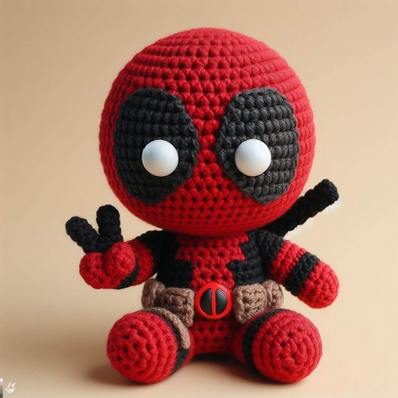

A little about us
We strive to bring Amigurumi in an affordable and crafter friendly kit! Our goal is to create Amigurumi kits that are useful and encourage creativity to crafters in any stage of their crocheting journey, beginner or veteran!
Just some random writing to pad out the white space on this site. To be honest, I used to corchet so I chose it as a topic but now I just have a bunch of yarn in my room that I want to get rid of but making things is tiring and honestly, I don't like the texture of yarn so it's just a concerning pile of gifted yarn that I hate touching and working with as crocheting somehow irritates my lungs and makes me cough and sneeze. On second thought, perhaps I'm allergic to certain yarn fibers.
Does yarn rot? I have no idea. The internet seems to have opinions about that but overall people say no. But then I swear some yarn is more flaky or smelly as they age. Or maybe it was because I stored it weird? Does yarn have to breath? How do you store yarn? I ask but I also don't care enough to actually research and properly store my pile of yarn.
-
Enjoy quality yarn and kits!
-
Cute designs and crafts!
 -
Easy to follow instructions with related videos!
- And more!